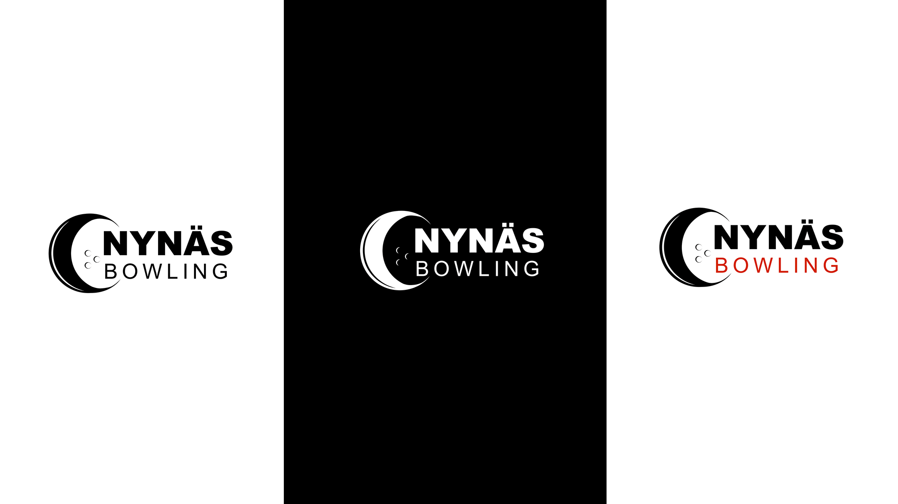

Nynäs Bowling - 2022
Timeline: 7 february 2022 - 18 february 2022
My role(s): Graphic Designer
This logotype was created for Nynäs Bowling, where they arrange events such as parties and private gatherings.
I would say this is was a smaller project as I improved the logotype by making it cleaner, more creative, and creating a logotype that is easy to remember.

